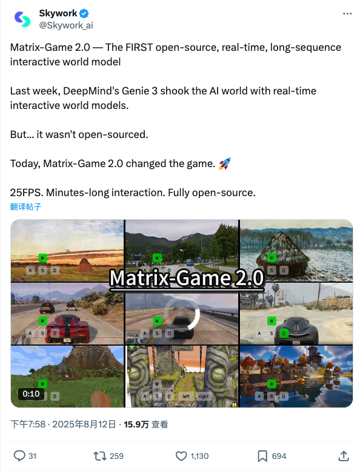
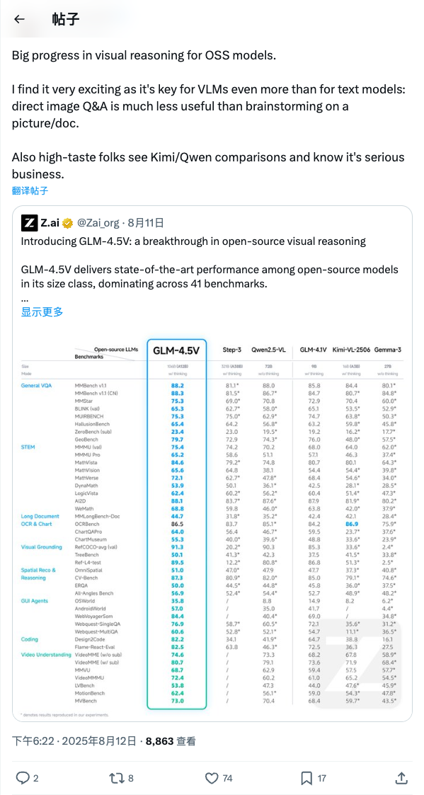
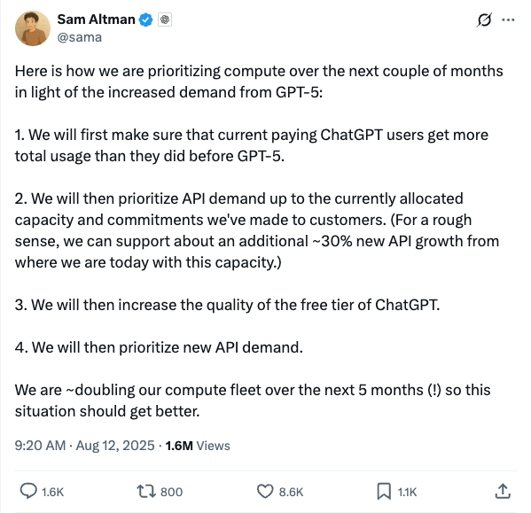
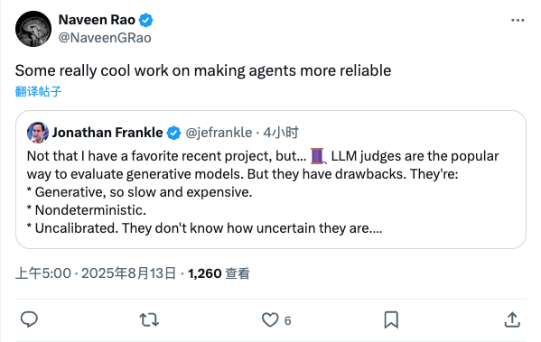
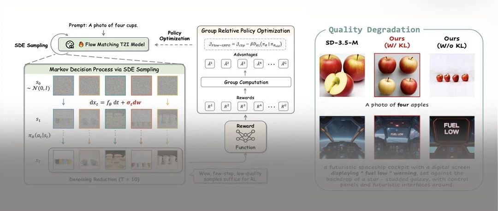
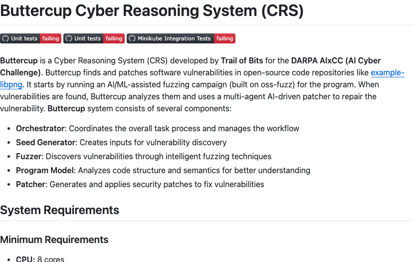

Twitter
Skywork_ai_Launches Matrix-Game 2.0: First Open-Source Real-Time Long-Sequence World Model
Published: 2025-08-12T11:58:17.000Z

Skywork_ai has launched Matrix-Game 2.0, claiming it to be the first open-source, real-time, long-sequence interactive world model. This model achieves a performance of 25 frames per second and supports minutes-long interactions. It aims to challenge the non-open-source nature of DeepMind's Genie 3, providing a fully open solution for the AI world model domain.
Thom_Wolf_Significant Progress in Open-Source Visual Reasoning with GLM-4.5V
Published: 2025-08-12T10:22:50.000Z

Thomas Wolf expresses excitement over significant progress in visual reasoning for open-source models, emphasizing its critical importance for Vision-Language Models (VLMs) even more than for text models. He highlights Z.ai's introduction of GLM-4.5V, noting its breakthrough in open-source visual reasoning, achieving state-of-the-art performance and dominating across 41 benchmarks, signaling serious advancements in open-source VLMs.
Miles_Brundage_Claude Sonnet 4 Context Window Significantly Expanded
Published: 2025-08-12T16:49:09.000Z
Anthropic's Claude Sonnet 4 model has received a significant context window upgrade on its API, now supporting 1 million tokens, a fivefold increase. This enhancement allows users to process over 75,000 lines of code or hundreds of documents in a single request, greatly improving the model's ability to handle long texts and complex tasks, providing developers with a more powerful tool.
allen_ai_Launches MolmoAct: An Open Action Reasoning Model for Physical World Actions
Published: 2025-08-12T13:02:08.000Z
Allen AI has announced the release of MolmoAct, a new, fully open Action Reasoning Model (ARM). This model is designed to enable AI models that operate in the physical world to process and execute human instructions, facilitating more intelligent interactions and automation. The introduction of MolmoAct represents a significant advancement in the fields of embodied AI and robotics control, providing researchers with an open-source tool for further development.
sama_Sam Altman Details Compute Prioritization for GPT-5 and Future Expansion Plans
Published: 2025-08-12T01:20:55.000Z

OpenAI CEO Sam Altman outlined the compute prioritization strategy for the coming months due to increased demand from GPT-5. He stated that the company will first ensure more usage for current paying ChatGPT users, then prioritize existing API demand, followed by improving the free tier of ChatGPT, and finally addressing new API demand. Altman also revealed plans to double OpenAI's compute fleet within the next five months to alleviate current compute constraints.
NaveenGRao_Improving AI Agent Reliability and New Generative Model Evaluation Method
Published: 2025-08-12T21:00:51.000Z

Naveen Rao shared and commented on Jonathan Frankle's insights regarding generative model evaluation. Frankle highlights the limitations of current LLM judges, including their slow speed, high cost, non-determinism, and lack of calibration. He introduces PGRM as a novel evaluation method designed to overcome these drawbacks, ultimately contributing to the enhanced reliability of AI agents.
wechat
Online Reinforcement Learning + Flow Matching Model! Flow-GRPO: The First Online RL-Driven Flow Matching Generative Model
Published: 2025-08-12T14:01:41.000Z

Flow-GRPO marks a pioneering advancement by integrating online reinforcement learning into Flow Matching generative models. This innovative framework transforms deterministic Ordinary Differential Equation (ODE) samplers into equivalent Stochastic Differential Equation (SDE) samplers, thereby introducing the necessary stochasticity for online RL application and optimizing the denoising process. By incorporating the GRPO algorithm, Flow-GRPO effectively addresses the inherent challenges of Flow Models in handling complex scenarios such as multi-object composition, spatial relationships, and accurate text rendering. Experimental results demonstrate that Flow-GRPO significantly enhances the accuracy and human preference alignment of text-to-image (T2I) generation. Furthermore, its novel Denoising Reduction strategy substantially accelerates the training process without compromising output quality. This breakthrough opens new avenues for developing high-quality generative models capable of producing intricate and precise visual content.
Tencent Open-Sources Stand-In! A New Breakthrough in Lightweight Identity-Preserving Video Generation
Published: 2025-08-12T06:43:33.000Z
Tencent has open-sourced Stand-In, a lightweight, plug-and-play framework designed to address the challenges of large training parameters and insufficient compatibility in high-fidelity identity-preserving video generation. By integrating a conditional image branch and a restricted self-attention mechanism, Stand-In achieves precise identity control and cross-branch information interaction with minimal training samples and negligible additional parameters. This framework demonstrates state-of-the-art performance in identity-preserving text-to-video generation, excelling in both video quality and identity consistency. Furthermore, Stand-In boasts strong compatibility, seamlessly extending to various applications such as topic-based generation, pose-guided video creation, stylization, and face swapping, showcasing its immense potential in the generative AI domain.
Physics' "AlphaGo Moment"? AI Solves 40-Year Unfinished Problem, Top Physicists Stunned
Published: 2025-08-12T04:16:31.000Z
Artificial intelligence has achieved groundbreaking advancements in physics, marking what is being called the "AlphaGo moment for physics." AI successfully designed counter-intuitive and highly complex optical component layouts, significantly boosting the sensitivity of the LIGO gravitational wave detector by 10-15%, a remarkable feat that addresses a challenge puzzling physicists for decades. Furthermore, AI independently redesigned a quantum entanglement experiment, discovered a more accurate dark matter formula than those previously proposed by human scientists, and even independently rediscovered "Lorentz symmetry," a fundamental cornerstone of Einstein's theory of relativity, without prior physical knowledge. These compelling cases demonstrate that AI is rapidly evolving from a mere computational tool into an indispensable and powerful scientific collaborator, signaling the imminent arrival of an era where AI profoundly assists in discovering entirely new physics.
GitHub No Longer Independent: CEO Resigns, Microsoft Integrates into CoreAI, Signaling a Paradigm Shift for Developers
Published: 2025-08-12T04:16:31.000Z
GitHub CEO Thomas Dohmke has announced his resignation, and GitHub will no longer operate independently, instead being fully integrated into Microsoft's newly formed CoreAI engineering group. This strategic move signifies GitHub's transformation from a mere code hosting platform into Microsoft's "AI agent factory" and "AI training ground," aiming to drive an "AI-first" software development paradigm through tools like Copilot. Microsoft's deep integration of GitHub into its AI division suggests a future where developers may increasingly supervise AI-generated code rather than writing it from scratch. This profound change is not merely a personnel shift but a complete reorientation of the software development model. Developers must adapt to GitHub's new role as a core component of Microsoft's AI arsenal. The article highlights GitHub's significant growth under Dohmke's leadership, with over 1.5 billion developers and 1 billion repositories, and Copilot's success as a leading AI coding assistant. Dohmke's departure to pursue new entrepreneurial ventures underscores the completion of his mission to lead GitHub into the AI era. This integration solidifies Microsoft's vision of embedding AI assistants across its product ecosystem, positioning GitHub at the forefront of this "Copilotization" strategy.
LLMs Overcomplicate Simple Tasks, Karpathy Frustrated: Some Tasks Don't Need That Much Thought
Published: 2025-08-12T03:08:20.000Z
The article highlights a growing issue where large language models (LLMs), despite their advanced “deep thinking” capabilities enabled by reasoning and Chain of Thought, increasingly overcomplicate simple tasks. Experts like Andrej Karpathy observe that LLMs, by default, exhibit an excessive “agentic” tendency, engaging in lengthy reasoning processes for straightforward queries. This leads to slow responses and inefficiency, particularly evident in coding and image editing applications. The phenomenon is attributed to LLMs being heavily optimized for long-duration, complex task benchmarks, causing them to treat all tasks as high-stakes “exams.” The piece emphasizes the critical need for users to have a mechanism to explicitly specify the required depth of thought for a given task, thereby preventing unnecessary overthinking and enhancing the practical utility of LLMs. This adjustment is crucial for improving user experience and operational efficiency across various applications.
Zhipu Open-Sources GLM-4.5V, Unveiling Visual Reasoning Capabilities Rivaling OpenAI's
Published: 2025-08-12T03:08:20.000Z
Zhipu AI has open-sourced its flagship visual reasoning model, GLM-4.5V, demonstrating exceptional performance across various visual tasks. The model notably defeated 99.99% of human players in the "GeoGuessr" game, showcasing its powerful visual inference capabilities from subtle cues. GLM-4.5V excels in advanced image recognition, long video understanding, GUI Agent applications, and complex document and chart interpretation. With 106 billion total parameters, it employs an advanced architecture and a three-stage training strategy, achieving state-of-the-art open-source performance across 41 public visual multimodal benchmarks. This open-sourcing initiative aims to shift the focus of AI development from benchmark competition to practical application, providing developers with a robust multimodal foundation model to collaboratively shape the future of AI.
GitHub
POML: Prompt Orchestration Markup Language
Published: 2025-08-13T05:02:40Z

POML (Prompt Orchestration Markup Language) is an innovative markup language specifically designed to bring structure, maintainability, and versatility to advanced prompt engineering for Large Language Models (LLMs). It effectively addresses prevalent challenges in prompt development, including the lack of inherent structure, complexities in data integration, sensitivity to output formats, and insufficient tooling. POML achieves this by providing a systematic approach that includes structured prompting with semantic components like and , comprehensive data handling for diverse types such as documents and images, decoupled presentation styling via a CSS-like system, and a robust integrated templating engine supporting variables and conditionals. This comprehensive framework, complemented by a rich development toolkit including a VS Code extension and SDKs, empowers developers to create more sophisticated, reliable, and easily maintainable LLM applications by organizing prompt components and managing variations efficiently.
abogen
Published: 2025-08-12T13:49:56Z

Abogen is a powerful and efficient text-to-speech conversion tool that seamlessly transforms ePub, PDF, or plain text files into high-quality audio, complete with perfectly synchronized subtitles, all within seconds. Built upon the advanced Kokoro-82M model, this application provides a comprehensive suite of features, including support for multiple audio and subtitle output formats, a sophisticated voice mixer for custom voice creation, and a robust queue mode for batch processing. Its capabilities extend to intelligent chapter marking and metadata tagging, making it exceptionally versatile for diverse applications. Abogen is an ideal solution for generating professional audiobooks, creating engaging voiceovers for social media platforms like Instagram, YouTube, and TikTok, or any project demanding natural-sounding speech synthesis. With straightforward cross-platform installation options and Docker deployment support, Abogen significantly streamlines and enhances content creation workflows for users across various operating environments.
GPT4All
Published: 2025-05-27T19:46:52Z

GPT4All is an open-source project designed to enable large language models (LLMs) to run privately on everyday desktops and laptops, eliminating the need for API calls or dedicated GPUs. It offers both a desktop application and a Python client, supporting DeepSeek R1 distilled models, GGUF format, and Nomic Vulkan for GPU inference. The project focuses on private data processing through local LLM deployment and integrates with tools like Langchain, providing a convenient and efficient local AI solution for individual users and developers.
Fine-tuning Notebooks
Published: 2025-08-09T21:22:18Z

This GitHub repository, maintained by Unsloth AI, offers an extensive and practical collection of fine-tuning notebooks specifically designed to simplify the development and deployment of various advanced artificial intelligence models. It provides comprehensive, guided examples for working with Large Language Models (LLMs), sophisticated multimodal systems, Text-to-Speech (TTS) applications, and cutting-edge computer vision models. Users can seamlessly leverage these well-structured notebooks on popular cloud-based platforms such as Google Colab and Kaggle, enabling streamlined data preparation, highly efficient model training, thorough performance evaluation, and seamless model saving. The project actively fosters community engagement through clear and accessible contribution guidelines, continuously encouraging the expansion of its diverse model and use-case coverage. This makes it an invaluable and versatile resource for AI developers and researchers aiming to achieve high-performance model fine-tuning with ease.
FULL v0, Cursor, Manus, Same.dev, Lovable, Devin, Replit Agent, Windsurf Agent, VSCode Agent, Dia Browser, Trae AI, Cluely, Perplexity, Xcode, Spawn & Orchids.app (And other Open Sourced) System Prompts, Tools & AI Models
Published: 2025-08-12T11:11:26Z

This GitHub repository serves as a comprehensive collection of AI system prompts and models, encompassing system instructions and underlying model information from prominent AI tools such as Cursor, Devin, Replit Agent, and VSCode Agent. It offers over 9000 lines of in-depth insights into the structure and functionality of these AI systems. The project aims to provide early access to the latest instructions via its Discord community and emphasizes the critical importance of data security for AI startups, offering security audit services. This resource is highly valuable for researching the internal mechanisms of AI tools, conducting reverse engineering, and enhancing AI system security.
Buttercup Cyber Reasoning System (CRS)
Published: 2025-08-09T18:13:28Z

Buttercup is a sophisticated Cyber Reasoning System (CRS) developed by Trail of Bits for the DARPA AIxCC program, specifically designed to automate the identification and remediation of software vulnerabilities in open-source code repositories. The system leverages advanced AI/ML-assisted fuzzing campaigns, built on frameworks like oss-fuzz, to proactively discover security flaws. Once vulnerabilities are found, Buttercup conducts in-depth analysis and deploys a multi-agent AI-driven patcher to autonomously generate and apply effective repairs. Its modular architecture includes an Orchestrator for workflow management, a Seed Generator, a Fuzzer for vulnerability discovery, a Program Model for code analysis, and a Patcher for remediation. Supporting C and Java source code that is OSS-Fuzz compatible, Buttercup significantly enhances software supply chain security and streamlines automated vulnerability management processes.
huggingface
Reinforcement Learning in Vision: A Survey
Published: 2025-08-11T17:08:55.000Z

Recent advances at the intersection of reinforcement learning (RL) and visual
intelligence have enabled agents that not only perceive complex visual scenes
but also reason, generate, and act within them. This survey offers a critical
and up-to-date synthesis of the field. We first formalize visual RL problems
and trace the evolution of policy-optimization strategies from RLHF to
verifiable reward paradigms, and from Proximal Policy Optimization to Group
Relative Policy Optimization. We then organize more than 200 representative
works into four thematic pillars: multi-modal large language models, visual
generation, unified model frameworks, and vision-language-action models. For
each pillar we examine algorithmic design, reward engineering, benchmark
progress, and we distill trends such as curriculum-driven training,
preference-aligned diffusion, and unified reward modeling. Finally, we review
evaluation protocols spanning set-level fidelity, sample-level preference, and
state-level stability, and we identify open challenges that include sample
efficiency, generalization, and safe deployment. Our goal is to provide
researchers and practitioners with a coherent map of the rapidly expanding
landscape of visual RL and to highlight promising directions for future
inquiry. Resources are available at:
https://github.com/weijiawu/Awesome-Visual-Reinforcement-Learning.
A Comprehensive Survey of Self-Evolving AI Agents: A New Paradigm
Bridging Foundation Models and Lifelong Agentic Systems
Published: 2025-08-10T16:07:32.000Z

Recent advances in large language models have sparked growing interest in AI
agents capable of solving complex, real-world tasks. However, most existing
agent systems rely on manually crafted configurations that remain static after
deployment, limiting their ability to adapt to dynamic and evolving
environments. To this end, recent research has explored agent evolution
techniques that aim to automatically enhance agent systems based on interaction
data and environmental feedback. This emerging direction lays the foundation
for self-evolving AI agents, which bridge the static capabilities of foundation
models with the continuous adaptability required by lifelong agentic systems.
In this survey, we provide a comprehensive review of existing techniques for
self-evolving agentic systems. Specifically, we first introduce a unified
conceptual framework that abstracts the feedback loop underlying the design of
self-evolving agentic systems. The framework highlights four key components:
System Inputs, Agent System, Environment, and Optimisers, serving as a
foundation for understanding and comparing different strategies. Based on this
framework, we systematically review a wide range of self-evolving techniques
that target different components of the agent system. We also investigate
domain-specific evolution strategies developed for specialised fields such as
biomedicine, programming, and finance, where optimisation objectives are
tightly coupled with domain constraints. In addition, we provide a dedicated
discussion on the evaluation, safety, and ethical considerations for
self-evolving agentic systems, which are critical to ensuring their
effectiveness and reliability. This survey aims to provide researchers and
practitioners with a systematic understanding of self-evolving AI agents,
laying the foundation for the development of more adaptive, autonomous, and
lifelong agentic systems.
Omni-Effects: Unified and Spatially-Controllable Visual Effects
Generation
Published: 2025-08-11T13:41:24.000Z

Visual effects (VFX) are essential visual enhancements fundamental to modern
cinematic production. Although video generation models offer cost-efficient
solutions for VFX production, current methods are constrained by per-effect
LoRA training, which limits generation to single effects. This fundamental
limitation impedes applications that require spatially controllable composite
effects, i.e., the concurrent generation of multiple effects at designated
locations. However, integrating diverse effects into a unified framework faces
major challenges: interference from effect variations and spatial
uncontrollability during multi-VFX joint training. To tackle these challenges,
we propose Omni-Effects, a first unified framework capable of generating
prompt-guided effects and spatially controllable composite effects. The core of
our framework comprises two key innovations: (1) LoRA-based Mixture of Experts
(LoRA-MoE), which employs a group of expert LoRAs, integrating diverse effects
within a unified model while effectively mitigating cross-task interference.
(2) Spatial-Aware Prompt (SAP) incorporates spatial mask information into the
text token, enabling precise spatial control. Furthermore, we introduce an
Independent-Information Flow (IIF) module integrated within the SAP, isolating
the control signals corresponding to individual effects to prevent any unwanted
blending. To facilitate this research, we construct a comprehensive VFX dataset
Omni-VFX via a novel data collection pipeline combining image editing and
First-Last Frame-to-Video (FLF2V) synthesis, and introduce a dedicated VFX
evaluation framework for validating model performance. Extensive experiments
demonstrate that Omni-Effects achieves precise spatial control and diverse
effect generation, enabling users to specify both the category and location of
desired effects.
WideSearch: Benchmarking Agentic Broad Info-Seeking
Published: 2025-08-11T14:03:09.000Z

From professional research to everyday planning, many tasks are bottlenecked
by wide-scale information seeking, which is more repetitive than cognitively
complex. With the rapid development of Large Language Models (LLMs), automated
search agents powered by LLMs offer a promising solution to liberate humans
from this tedious work. However, the capability of these agents to perform such
"wide-context" collection reliably and completely remains largely unevaluated
due to a lack of suitable benchmarks. To bridge this gap, we introduce
WideSearch, a new benchmark engineered to evaluate agent reliability on these
large-scale collection tasks. The benchmark features 200 manually curated
questions (100 in English, 100 in Chinese) from over 15 diverse domains,
grounded in real user queries. Each task requires agents to collect large-scale
atomic information, which could be verified one by one objectively, and arrange
it into a well-organized output. A rigorous five-stage quality control pipeline
ensures the difficulty, completeness, and verifiability of the dataset. We
benchmark over 10 state-of-the-art agentic search systems, including
single-agent, multi-agent frameworks, and end-to-end commercial systems. Most
systems achieve overall success rates near 0\%, with the best performer
reaching just 5\%. However, given sufficient time, cross-validation by multiple
human testers can achieve a near 100\% success rate. These results demonstrate
that present search agents have critical deficiencies in large-scale
information seeking, underscoring urgent areas for future research and
development in agentic search. Our dataset, evaluation pipeline, and benchmark
results have been publicly released at https://widesearch-seed.github.io/
MolmoAct: Action Reasoning Models that can Reason in Space
Published: 2025-08-11T12:32:45.000Z

Reasoning is central to purposeful action, yet most robotic foundation models
map perception and instructions directly to control, which limits adaptability,
generalization, and semantic grounding. We introduce Action Reasoning Models
(ARMs), a class of vision-language-action models that integrate perception,
planning, and control through a structured three-stage pipeline. Our model,
MolmoAct, encodes observations and instructions into depth-aware perception
tokens, generates mid-level spatial plans as editable trajectory traces, and
predicts precise low-level actions, enabling explainable and steerable
behavior. MolmoAct-7B-D achieves strong performance across simulation and
real-world settings: 70.5% zero-shot accuracy on SimplerEnv Visual Matching
tasks, surpassing closed-source Pi-0 and GR00T N1; 86.6% average success on
LIBERO, including an additional 6.3% gain over ThinkAct on long-horizon tasks;
and in real-world fine-tuning, an additional 10% (single-arm) and an additional
22.7% (bimanual) task progression over Pi-0-FAST. It also outperforms baselines
by an additional 23.3% on out-of-distribution generalization and achieves top
human-preference scores for open-ended instruction following and trajectory
steering. Furthermore, we release, for the first time, the MolmoAct Dataset --
a mid-training robot dataset comprising over 10,000 high quality robot
trajectories across diverse scenarios and tasks. Training with this dataset
yields an average 5.5% improvement in general performance over the base model.
We release all model weights, training code, our collected dataset, and our
action reasoning dataset, establishing MolmoAct as both a state-of-the-art
robotics foundation model and an open blueprint for building ARMs that
transform perception into purposeful action through structured reasoning.
Blogpost: https://allenai.org/blog/molmoact
Grove MoE: Towards Efficient and Superior MoE LLMs with Adjugate Experts
Published: 2025-08-11T09:15:36.000Z

The Mixture of Experts (MoE) architecture is a cornerstone of modern
state-of-the-art (SOTA) large language models (LLMs). MoE models facilitate
scalability by enabling sparse parameter activation. However, traditional MoE
architecture uses homogeneous experts of a uniform size, activating a fixed
number of parameters irrespective of input complexity and thus limiting
computational efficiency. To overcome this limitation, we introduce Grove MoE,
a novel architecture incorporating experts of varying sizes, inspired by the
heterogeneous big.LITTLE CPU architecture. This architecture features novel
adjugate experts with a dynamic activation mechanism, enabling model capacity
expansion while maintaining manageable computational overhead. Building on this
architecture, we present GroveMoE-Base and GroveMoE-Inst, 33B-parameter LLMs
developed by applying an upcycling strategy to the Qwen3-30B-A3B-Base model
during mid-training and post-training. GroveMoE models dynamically activate
3.14-3.28B parameters based on token complexity and achieve performance
comparable to SOTA open-source models of similar or even larger size.